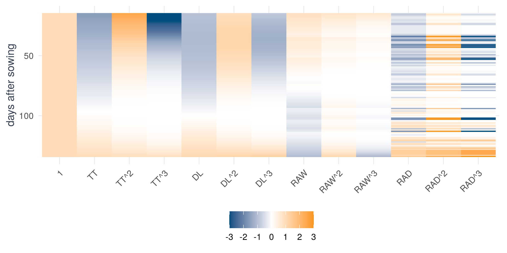

drv <- make_drivers(wx)
dim(drv$U) # year x day x driver[1] 31 150 4round(drv$center, 1) # the mean of each driver, used to standardise TT DL RAW RAD
1148.2 12.1 0.5 16.0 Candidate functions of the weather, stacked into one regression problem
Each driver is standardised (mean 0, standard deviation 1) so that coefficients are comparable and a cubic in a driver stays well behaved. We only use weather here, never biomass, so this step cannot leak anything about the response.
make_drivers <- function (wx, drivers = c("TT", "DL", "RAW", "RAD"))
{
years <- sort(unique(wx$year))
das0 <- min(wx$das)
nd <- max(wx$das) - das0 + 1
U <- array(NA, c(length(years), nd, length(drivers)), dimnames = list(years,
NULL, drivers))
for (i in seq_along(years)) {
w <- wx[wx$year == years[i], ]
U[i, w$das - das0 + 1, ] <- as.matrix(w[, drivers])
last <- max(w$das) - das0 + 1
if (last < nd)
U[i, (last + 1):nd, ] <- matrix(rep(U[i, last, ],
each = nd - last), nd - last)
}
center <- apply(U, 3, mean)
scale <- apply(U, 3, function(x) sqrt(mean((x - mean(x))^2)))
for (j in seq_along(drivers)) U[, , j] <- (U[, , j] - center[j])/scale[j]
list(U = U, years = years, das0 = das0, drivers = drivers,
center = center, scale = scale)
}drv <- make_drivers(wx)
dim(drv$U) # year x day x driver[1] 31 150 4round(drv$center, 1) # the mean of each driver, used to standardise TT DL RAW RAD
1148.2 12.1 0.5 16.0 The growth rate on day \(t\) is modelled as a combination of candidate functions of that day’s drivers \(u_t = (\text{TT}, \text{DL}, \text{RAW}, \text{RAD})\):
\[ \frac{\mathrm{d}y}{\mathrm{d}t} \approx \sum_{j=1}^{K} \xi_j\,\theta_j(u_t), \qquad \theta_j \in \{\,1,\ \text{TT},\ \text{TT}^2,\ \text{TT}^3,\ \text{DL},\ \dots,\ \text{RAD}^3\,\} \]
That is a constant and a cubic polynomial in each driver: \(K = 1 + 3 \times 4 = 13\) terms.
library_matrix <- function (Z, degree = 3, pairs = FALSE)
{
pw <- function(x, p) if (p == 1)
x
else paste0(x, "^", p)
d <- colnames(Z)
cols <- list(rep(1, nrow(Z)))
nm <- "1"
for (j in seq_along(d)) for (p in seq_len(degree)) {
cols[[length(cols) + 1]] <- Z[, j]^p
nm <- c(nm, pw(d[j], p))
}
if (pairs)
for (i in 1:(length(d) - 1)) for (j in (i + 1):length(d)) for (p in 1:2) for (q in 1:2) {
cols[[length(cols) + 1]] <- Z[, i]^p * Z[, j]^q
nm <- c(nm, paste0(pw(d[i], p), "*", pw(d[j], q)))
}
L <- do.call(cbind, cols)
colnames(L) <- nm
L
}make_library <- function (drv, degree = 3, pairs = FALSE)
{
nd <- dim(drv$U)
Z <- matrix(drv$U, ncol = nd[3])
colnames(Z) <- drv$drivers
L <- library_matrix(Z, degree, pairs)
array(L, c(nd[1:2], ncol(L)), dimnames = list(NULL, NULL,
colnames(L)))
}Theta <- make_library(drv)
dim(Theta) # year x day x term[1] 31 150 13dimnames(Theta)[[3]] [1] "1" "TT" "TT^2" "TT^3" "DL" "DL^2" "DL^3" "RAW" "RAW^2"
[10] "RAW^3" "RAD" "RAD^2" "RAD^3"The library is the value of every candidate on every day of every year. Here it is for one year (each column is one term):
y <- 1; n <- 120
d <- expand.grid(day = 1:n, term = factor(dimnames(Theta)[[3]], dimnames(Theta)[[3]]))
d$value <- as.vector(Theta[y, 1:n, ]); d$das <- d$day + drv$das0 - 1
ggplot(d, aes(term, das, fill = value)) + geom_raster() + scale_y_reverse() +
scale_fill_gradient2(low = dgxe[["blue"]], mid = "white", high = dgxe[["orange"]], limits = c(-3, 3), oob = scales::squish) +
labs(x = NULL, y = "days after sowing", fill = "value") + theme_dgxe() + theme(axis.text.x = element_text(angle = 45, hjust = 1), panel.grid = element_blank())
For every genotype-year we need the biomass trajectory as an array Y[genotype, year, day], with NA after maturity.
make_trajectories <- function (traj, drv, var = "biomass")
{
gen <- sort(unique(traj$genotype))
nd <- dim(drv$U)[2]
Y <- array(NA, c(length(gen), length(drv$years), nd), dimnames = list(gen,
drv$years, NULL))
Y[cbind(match(traj$genotype, gen), match(traj$year, drv$years),
traj$das - drv$das0 + 1)] <- traj[[var]]
nend <- apply(Y, c(1, 2), function(v) sum(!is.na(v)) - 1)
list(Y = Y, nend = nend, genotypes = gen, years = drv$years,
das0 = drv$das0)
}tr <- make_trajectories(traj, drv)
dim(tr$Y)[1] 199 31 150summary(as.vector(tr$nend)) # number of daily steps per trajectory Min. 1st Qu. Median Mean 3rd Qu. Max.
125.0 133.0 137.0 136.7 140.0 149.0 The increments are \(z_t = y_{t+1} - y_t\) and the regressors on that step are the library values on day \(t\).
Stacking every step of every trajectory gives an ordinary regression problem \(z \approx X\xi\). Here it is for three genotypes:
build_design <- function (Theta, tr, genotypes = tr$genotypes)
{
X <- list()
z <- list()
id <- list()
for (g in genotypes) for (y in seq_along(tr$years)) {
gi <- match(g, tr$genotypes)
n <- tr$nend[gi, y]
v <- tr$Y[gi, y, 1:(n + 1)]
X[[length(X) + 1]] <- matrix(Theta[y, 1:n, ], n)
z[[length(z) + 1]] <- diff(v)
id[[length(id) + 1]] <- data.frame(genotype = g, year = tr$years[y],
day = 0:(n - 1))
}
X <- do.call(rbind, X)
colnames(X) <- dimnames(Theta)[[3]]
list(X = X, z = unlist(z), id = do.call(rbind, id))
}des <- build_design(Theta, tr, tr$genotypes[1:3])
dim(des$X) # rows = genotype x year x day, columns = library terms[1] 12499 13round(head(des$X, 3), 2) 1 TT TT^2 TT^3 DL DL^2 DL^3 RAW RAW^2 RAW^3 RAD RAD^2 RAD^3
[1,] 1 -1.58 2.50 -3.95 -0.95 0.90 -0.86 0.85 0.73 0.62 -0.68 0.46 -0.31
[2,] 1 -1.56 2.45 -3.83 -0.96 0.92 -0.89 0.83 0.69 0.58 -0.84 0.71 -0.60
[3,] 1 -1.55 2.39 -3.69 -0.97 0.95 -0.92 0.81 0.65 0.53 -0.51 0.26 -0.13head(des$z) # the daily increments (t/ha per day)[1] 0.0026 0.0038 0.0045 0.0053 0.0056 0.0063An ordinary lm fits it directly:
round(coef(lm(des$z ~ des$X - 1)), 3) des$X1 des$XTT des$XTT^2 des$XTT^3 des$XDL des$XDL^2 des$XDL^3
0.165 -0.045 -0.034 0.015 0.016 -0.058 0.022
des$XRAW des$XRAW^2 des$XRAW^3 des$XRAD des$XRAD^2 des$XRAD^3
0.020 -0.015 -0.003 0.006 -0.003 0.000 For any linear method, the data enter only through \(A = X^\top X\) and \(b = X^\top z\). We compute them per genotype and per year, so that cross-validation later only needs to add and subtract small matrices (for 199 genotypes the full design matrix has 850,000 rows).
gram_stats <- function (Theta, tr)
{
G <- dim(tr$Y)[1]
ny <- length(tr$years)
K <- dim(Theta)[3]
A <- array(0, c(G, ny, K, K))
b <- array(0, c(G, ny, K))
for (g in seq_len(G)) for (y in seq_len(ny)) {
n <- tr$nend[g, y]
X <- matrix(Theta[y, 1:n, ], n)
A[g, y, , ] <- crossprod(X)
b[g, y, ] <- crossprod(X, diff(tr$Y[g, y, 1:(n + 1)]))
}
list(A = A, b = b, n = tr$nend, names = dimnames(Theta)[[3]])
}gram <- gram_stats(Theta, tr)
A <- apply(gram$A[1:3, , , ], c(3, 4), sum); b <- apply(gram$b[1:3, , ], 3, sum)
c(max_diff_A = max(abs(A - crossprod(des$X))), max_diff_b = max(abs(b - crossprod(des$X, des$z)))) max_diff_A max_diff_b
4.569301e-09 2.160050e-12 max(abs(solve(A, b) - coef(lm(des$z ~ des$X - 1)))) # same coefficients as lm[1] 5.162537e-15The library and the data are separate. Once A and b exist, a fitting method never sees weather or biomass again, only these two small objects. That is why any regression method (OLS, ridge, sparse, lasso) can be swapped in at the next step.
A and b built from the per-trajectory pieces equal crossprod(X) and crossprod(X, z) from the explicit design matrix up to rounding, and solve(A, b) equals lm.
Change degree = 3 in make_library to 2 or 4, drop a driver from make_drivers(wx, drivers = c("TT", "DL", "RAW")), or add products of drivers with pairs = TRUE (37 terms). Everything downstream adapts automatically.